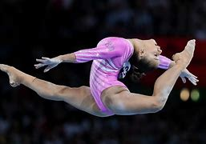

Explore the Olympic Sports
The Olympic Games feature a wide variety of sports that bring together athletes from around the world to compete at the highest level. Below, you can learn more about the different sports featured in the upcoming games.
Featured Sports
Athletics
Athletics includes track and field events, road running, and race walking. Athletes compete in races of various distances and field events such as long jump, high jump, and shot put.
Swimming
Swimming features various strokes including freestyle, backstroke, breaststroke, and butterfly. The swimming events range from short sprints to long-distance races.
Gymnastics
Gymnastics showcases flexibility, strength, and artistry. It includes artistic gymnastics, rhythmic gymnastics, and trampoline events, highlighting the athletes' acrobatic skills.
Cycling
Cycling events include road cycling, track cycling, mountain biking, and BMX. Athletes compete in individual and team events, showcasing speed and endurance.
Team Sports
Team sports at the Olympics include basketball, football, hockey, and volleyball. These events emphasize teamwork and strategy, culminating in exciting competitions.
Wrestling
Wrestling combines skill, strength, and strategy. Athletes compete in various styles, including freestyle and Greco-Roman, aiming to pin their opponent.
Upcoming Olympic Events
Summer Olympics 2024
Date: July 26 - August 11, 2024
Location: Paris, France
The Summer Olympics will feature 32 sports, including new events like skateboarding and surfing.

Winter Olympics 2026
Date: February 6 - 22, 2026
Location: Milan-Cortina, Italy
The Winter Olympics will showcase sports like skiing, snowboarding, and ice hockey.
Notable Events in Olympic History
- 1972 Munich Olympics: Marked by the tragic events of the hostage crisis, which led to significant changes in security measures for future Games.
- 1980 Moscow Olympics: Boycotted by many countries due to political tensions, highlighting the intersection of sports and global politics.
- 1996 Atlanta Olympics: Known for the memorable performances by athletes like Michael Johnson and the tragic bombing that underscored security concerns.
- 2008 Beijing Olympics: Celebrated for its spectacular opening ceremony and extraordinary performances by athletes like Usain Bolt.
- 2016 Rio Olympics: Notable for its vibrant culture and the challenges faced, including economic issues and public health concerns.
Get Involved in the Olympic Movement
You can support the Olympic movement by following your favorite sports, volunteering, or attending events. Join us in celebrating the spirit of the Olympics!
Join Us!